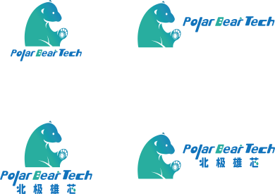

– Present

Tsinghua University
Ph.D. Student
BeijingComputer Systems Architecture
Ph.D. Student
IIIS, Tsinghua University
Build systems, share knowledge, pave the way.
Ph.D. Student
BeijingComputer Systems Architecture
B.Eng. in Microelectronics
ShanghaiHigh School
GuangzhouI am a first-year Ph.D. student at ArchipLab, Institute for Interdisciplinary Information Sciences (IIIS), Tsinghua University, advised by Prof. Kaisheng Ma. I am also a compiler team member and chip architect at Polar Bear Technologies, working with Dr. Zhanhong Tan.
Previously, I earned my B.Eng. in Microelectronics from Fudan University. Most formatively, I worked on computer architecture and hardware design at Shanghai Qi Zhi Institute with Prof. Mingyu Gao, and AI algorithms and systems at Duke CEI Center with Prof. Yiran Chen and Dr. Cong Guo. At Fudan, I also explored AI algorithms with Prof. Yibo Fan, electronic design automation with Prof. Fan Yang, and hardware design with Prof. Jun Han, completing my undergraduate thesis on architecture-aware compiler optimization under the guidance of Prof. Chixiao Chen.
My research focuses on building efficient computing systems for AI through hardware–software co-design. As AI models evolve rapidly and application needs become more specialized, efficiency increasingly depends on coordinated decisions across models, systems, and hardware. I believe modern computer architects must therefore think across the full stack.
My long-term goal is to rethink computing infrastructure for AI agents and help democratize AI. I envision a future where everyone can freely use, build, adapt, and share AI without depending on a handful of platforms, driven by efficient, decentralized, and on-device intelligence.
Currently, my interests span three interconnected directions:
I’m open to research collaborations, internship opportunities, and entrepreneurial ventures. I welcome conversations with researchers, founders, investors, and anyone interested in AI’s societal impact and governance.
† Equal contribution / co-first author · * Corresponding author.

Compiler Team Member & Chip Architect Advisor: Dr. Zhanhong Tan
Developed weight-layout selection and GEMM scheduling for LLM inference on 3D-stacked near-memory processors, integrating a layout search engine into the company’s compiler. Since July 2026, I have worked on next-generation chip architectures, HBF, and LLM memory management.
Research Intern Advisor: Prof. Yiran Chen
Led the diffusion language model research group and DPad project, proposed suffix dropout, and independently implemented the open-source codebase. Co-first author, ICLR 2026.
Research Intern Advisor: Prof. Mingyu Gao
Took over CROPHE and progressively assumed project leadership, developing memory-aware scheduling and unified processing elements for FHE accelerators. Co-first author, HPCA 2026; co-author, DATE 2025.
I welcome conversations across research, entrepreneurship, and AI’s role in society. These are the areas where I’m especially interested in exchanging ideas and working together.
My current work focuses on 3D-stacked near-memory processing and High-Bandwidth Flash (HBF). I study how emerging workloads, including workplace AI agents and world models, reshape compute and memory requirements.
I welcome collaborations on these topics and, more broadly, on redesigning computer systems for AI agents across the hardware–software stack.
My technical perspective has helped me spot emerging opportunities in memory, CPUs, and EDA in public markets. I’m less certain how far that growth will go or how markets will price it, and I’d value investors’ perspectives.
I also have early startup ideas and hope to found a company in the next two to five years. I’d be glad to meet potential cofounders.
A compelling technical vision does not guarantee a better society. In my essay “AI Doomerism Obscures the Questions That Matter Now” (in Chinese), I raise six questions about AI’s effects on human relationships, collective judgment, and the governance of on-device models. Addressing them calls for perspectives from psychology, sociology, economics, and law.
I welcome conversations and collaborations across these fields.